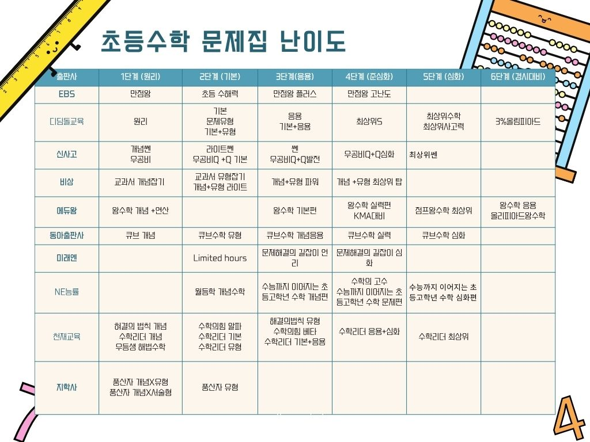

초등 수학 문제집, 학년별로 어떻게 골라서 진행했는지 정리했어요
많이 물어보셨던 소윤이 수학 루틴, 정리해서 공유드려요 😊
먼저 꼭 말씀드리고 싶은 건, 이 루틴 그대로 하실 필요는 없다는 거예요. 아이마다 속도도 다르고 이해하는 방식도 다르기 때문에, 우리 아이에게 맞게 조절해서 보시면 좋겠어요.
이 포스팅은 쿠팡 파트너스 활동의 일환으로, 이에 따른 일정액의 수수료를 제공받습니다.
우리 집이 써보고 좋았던 기본 개념 문제집
“한 학기에 3권이 가능해요?”
처음엔 느리게, 개념이 잡히면 응용 위주로 속도를 올렸어요. 그러면서 현행보다 살짝 앞서가기 시작했어요 ✨
연산은 어릴 때부터 꾸준히 해왔기 때문에, 학년 진도에 맞추기보다는 아이 속도에 맞춰 조금씩 선행으로 빼줬어요.
연산이 어느 정도 익숙해져 있으니, 새로운 단원을 배울 때 계산 때문에 막히는 일이 줄어서 교과 문제를 풀 때도 훨씬 수월하더라고요.
👉 저희 집 수학은
교과는 아이 수준에 맞게, 연산은 꾸준히 조금씩 선행으로!
저희도 처음부터 잘한 건 아니고, 문제집을 잘못 선택해서 아이를 울리기도 많이 했어요 🥲 그래서 더 느꼈어요 — “난이도 선택이 제일 중요하다”는 걸요.
필요하신 분들은 아래 표를 참고해서 우리 아이에게 맞는 단계부터 천천히 시작해보세요 😊

| 출판사 | 1단계 (원리) | 2단계 (기본) | 3단계 (응용) | 4단계 (준심화) | 5단계 (심화) | 6단계 (경시대비) |
|---|---|---|---|---|---|---|
| EBS | 만점왕 | 초등 수해력 | 만점왕 플러스 | 만점왕 고난도 | — | — |
| 디딤돌교육 | 원리 | 기본 문제유형 기본+유형 |
응용 기본+응용 |
최상위S | 최상위수학 최상위사고력 |
3%올림피아드 |
| 신사고 | 개념쎈 우공비 |
라이트쎈 우공비Q 기본 |
쎈 우공비Q+Q발전 |
우공비Q+Q심화 | 최상위쎈 | — |
| 비상 | 교과서 개념잡기 | 교과서 유형잡기 개념+유형 라이트 |
개념+유형 파워 | 개념+유형 최상위 탑 | — | — |
| 에듀왕 | 왕수학 개념+연산 | — | 왕수학 기본편 | 왕수학 실력편 KMA대비 |
점프왕수학 최상위 | 왕수학 응용 올림피아드왕수학 |
| 동아출판사 | 큐브 개념 | 큐브수학 유형 | 큐브수학 개념응용 | 큐브수학 실력 | 큐브수학 심화 | — |
| 미래엔 | — | — | 문제해결의 길잡이 원리 | 문제해결의 길잡이 심화 | — | — |
| NE능률 | — | 월등학 개념수학 | 수능까지 이어지는 초등고학년 수학 개념편 |
수학의 고수 수능까지 이어지는 초등고학년 수학 문제편 |
수능까지 이어지는 초등고학년 수학 심화편 |
— |
| 천재교육 | 해결의 법칙 개념 수학리더 개념 우등생 해법수학 |
수학의힘 알파 수학리더 기본 수학리더 유형 |
해결의 법칙 유형 수학의힘 베타 수학리더 기본+응용 |
수학리더 응용+심화 | 수학리더 최상위 | — |
| 지학사 | 품산자 개념X유형 품산자 개념X서술형 |
품산자 유형 | — | — | — | — |
가로로 넘겨서 전체 표를 확인하실 수 있어요.